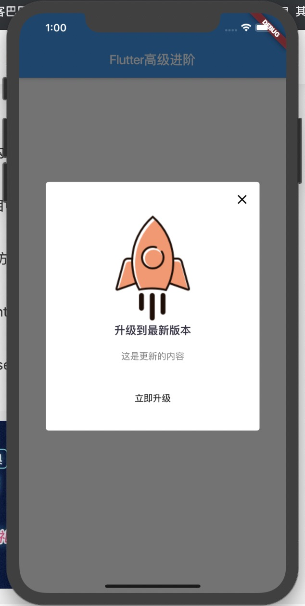

App内更新并自动打开安装
实现页面：

需要的小火箭图片：
需求：
- 进入App进行一次检测，如有新版本则弹出更新对话框；
- 如后台设置强制更新则无任何取消更新进入App的可能性；
- 显示更新内容和版本信息Log等；
- 如用户点击更新按钮则开始下载并展示下载进度；
- 下载安装包完毕后直接打开安装包进入安装页面；
分析：
- 需要字段：是否强制更新、更新内容、安装包URL；
- 使用WillPopScope拦截返回事件；
- 因为需要显示下载进度则dialog内需要放有状态类；
- 如果不需要强制更新则显示出❌，允许用户取消更新；
第三方库：
| 名称 | 作用 |
|---|---|
| package_info | app版本和平台信息 |
| url_launcher | 打开AppStore更新IOS版安装包 |
| open_file | 打开安装包进入安装页面 |
| path_provider | 配置安装包下载路径 |
| dio | 接口最新版本数据、下载安装包 |
开干
1.首先把需要的库配置一下,在我们的pubspec.yaml文件
url_launcher: any
package_info: any
open_file: any
path_provider: any
dio: any
2.定义模拟的数据
Map mockData = {
'isForceUpdate': false, // 是否强制更新
'content': '这是更新的内容',
'url': 'http://www.flutterj.com/app-release.apk', // 安装包的链接
};
3.写对话框
偷懒中。。。。。